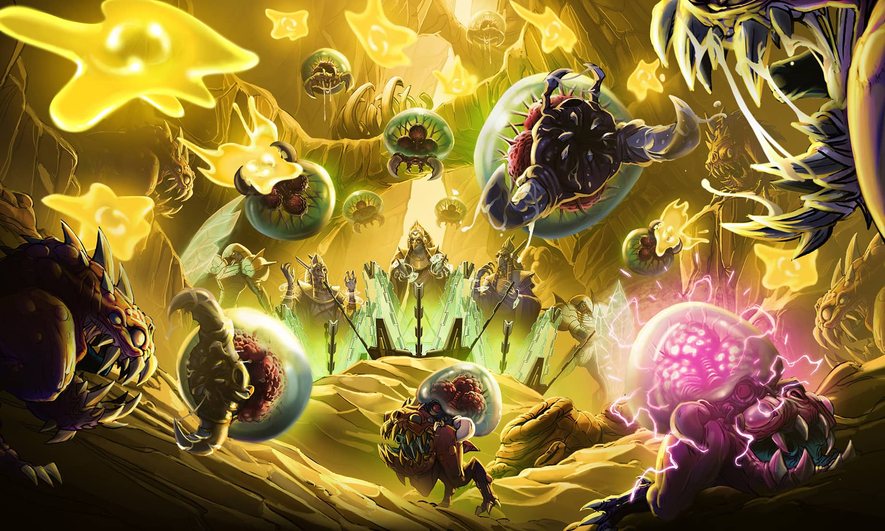
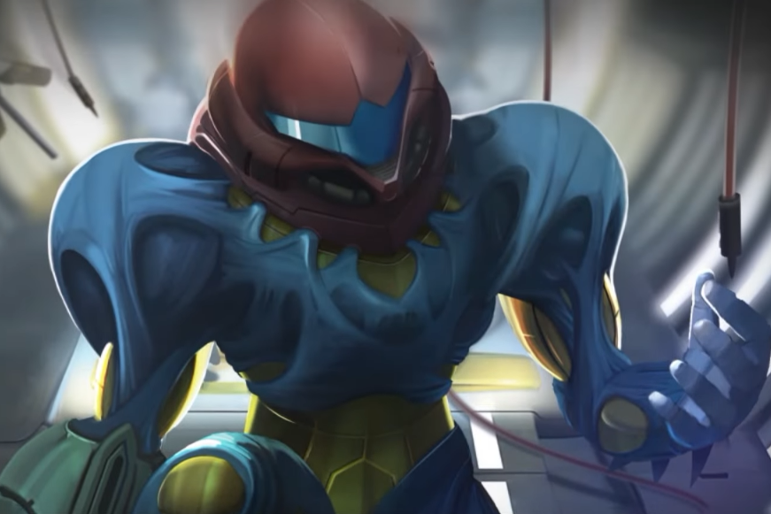

GALACTIC BOUNTER HUNTER
The daughter of Rodney Aran and Virginia Aran, she lost her parents during a Space Pirate raid on her home of
K-2L. Later, Samus was adopted by the mysterious Chozo and taken to Zebes, where she was infused with their DNA
and raised to become a warrior.
Once she reached adulthood, Samus joined the Federation Police and
served under
the Commanding Officer Adam Malkovich. Though she ultimately left to become a Bounty Hunter, she was nonetheless
hired by the Galactic Federation on many occasions.
Equipped with her cybernetic Power Suit, Samus has
become
famous for accomplishing missions previously thought impossible.
Her most renowned achievements are the
destruction of the Space Pirate base on Zebes, her role in ending the Galactic Phazon crisis, her extermination
of the Metroid species, and her disobedience of orders at the Biologic Space Laboratories research station where
she chose to destroy the deadly X Parasites rather than turn them over to the Galactic Federation.

MISSION HISTORY
The Galactic Federation takes the incident with the Space Pirates on planet Zebes very seriously.
They send a research ship to planet SR388 to confirm the existence of the Metroid there. However, the ship
disappears.
A rescue unit is sent to SR388, but contact is lost with them as well. The Federation concludes that the
subterranean Metroid creatures are responsible. Samus is called in once again, this time to exterminate the
Metroid threat on SR388.
After many deadly battles with the Metroid in their various evolutionary forms, Samus confronts and defeats the
Queen Metroid, marking a successful end to the mission. Unexpectedly, a newborn Metroid hatches in front of
Samus—as she is the first creature it sees, the larva imprints on Samus and believes her to be its mother. Samus
can’t bring herself to kill the hatchling, so she takes it back to the Galactic Federation’s Space Science
Academy for study.
Samus is hired by biotech company Biologic Space Laboratories (B.S.L.) to protect a field research unit on
planet SR388.
Research on the surface goes well until Samus is exposed to and attacked by the X parasite, a lifeform with the
ability to mimic organic creatures in their entirety. The parasite puts Samus in critical condition and renders
her unconscious. All hope seems lost as the X quickly multiplies and erodes her body.
Scientists determine that a vaccine made using a cell culture sourced from the Metroid hatchling is Samus’ only
chance of survival. She miraculously escapes death, and, at the same time, becomes the only living creature with
immunity to the X parasite.
Aboard the B.S.L. station orbiting SR388, Samus engages in a fierce battle with the SA-X—a mimic of Samus in her
Power Suit at full strength—and succeeds in wiping out the X parasite, destroying the station and planet SR388
in the process.

